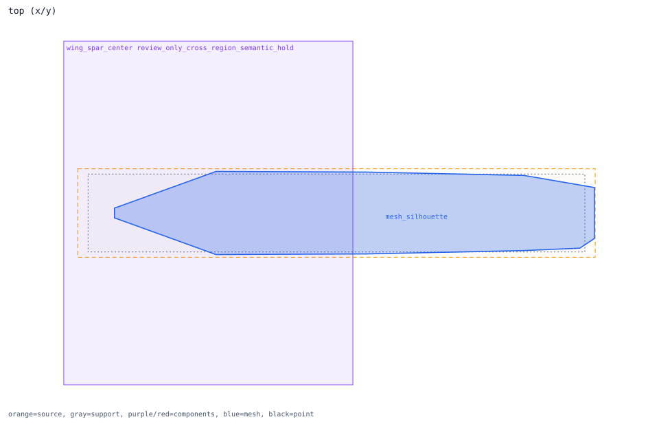
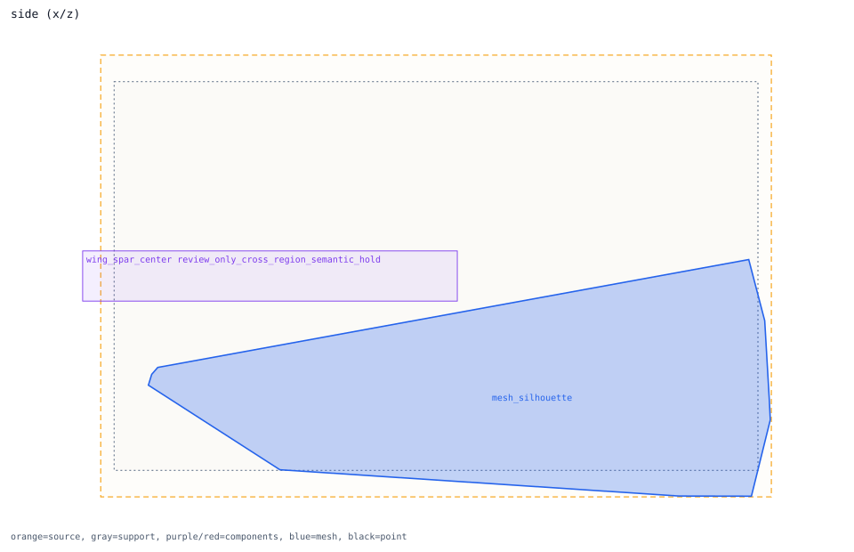
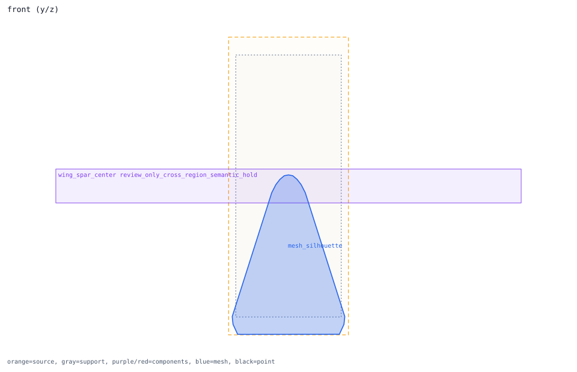

wing_spar_center
component binding -> center_fuselage
Review question
Should wing_spar_center remain a held cross-region structural semantic candidate?
Look at
Check the broad thin box across center fuselage and wing-root surfaces before assigning a single receiver.
Decision needed
Hold or split the semantic receiver before runtime projection; low overlap alone is not a bad-box verdict.
Trace Details
- component: wing_spar_center
- system: wings
- bound outer region: center_fuselage
- review semantics: cross_region_structural_semantic_hold
- review severity: review_only_hold
- component center distance to region: 1.06379 m
- anomalies:
- geometry observations: low_outer_region_overlap
- suppressed anomalies: low_outer_region_overlap
- semantic regions: center_fuselage, left_wing_root, right_wing_root, left_wing, right_wing
- side relation: {"bound_region_center_y_m": 0.0, "bound_region_center_y_sign": "centerline_y", "bound_region_declared_side": "none", "component_center_y_m": 0.0, "component_center_y_sign": "centerline_y", "component_declared_side": "none", "side_sign_mismatch": false}
- blocked region binding: {"blocked": false, "blocked_region_id": "", "preferred_region_ids": []}
- review notes: wing_spar_center is a broad thin structural component crossing fuselage and wing-root semantics | low single-region overlap is held as a cross-region semantic candidate, not a bad box by itself | review-only hold, not accepted runtime damage integration | suppressed geometry observation: low_outer_region_overlap


